Current A2 report: full-resolution figures
Numbering and explanations match the selected report. Click any image to inspect its original resolution.
Figure 1. Complete pair similarities, threshold selection and three layouts.
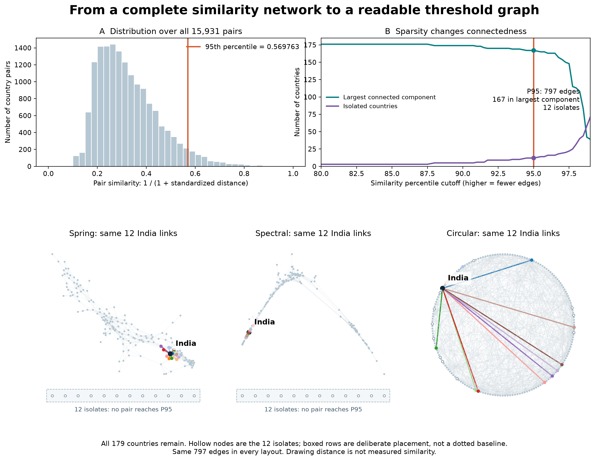
How to read
The histogram counts all unique country pairs. The second panel sweeps percentile cutoffs from P80 to P99 and counts countries in the largest connected component and countries with no retained edge. The vertical lines mark P95. The lower panels draw the same 797 retained edges with Spring, Spectral and Circular positions; India and its twelve links are highlighted.
Why this chart
The full similarity distribution makes the filtering decision visible instead of silently imposing nearest neighbors. Three layouts then test representation effects on one fixed threshold graph. A shared threshold treats every country pair by the same rule.
Interpretation
The complete similarity network contains 179 x 178 / 2 = 15,931 unique undirected country pairs. We standardize the four 2020 indicators and calculate s = 1/(1+d), where d is Euclidean distance. The distribution is concentrated at lower similarities; the median is 0.303. We retain the strongest 5%, giving a threshold of 0.569763 and 797 edges. This rule is declared for a sparse starting view, rather than selected to produce an attractive grouping.
The threshold graph keeps all 179 nodes. Twelve countries have no qualifying pair, and the largest connected component contains 167 countries. Isolation here means no profile exceeds this chosen cutoff, not absence of internet connections. The browser starts at the exact threshold and can return to zero to display the complete graph. Layout coordinates are computed on the default filtered graph and remain fixed when the slider changes.
India has twelve retained neighbors: Cameroon, Gambia, Honduras, Haiti, Lesotho, Nigeria, Nicaragua, Sao Tome and Principe, Eswatini, Togo, East Timor, Zimbabwe. The identical edge list is drawn in all three layouts. Lines can become longer or cross differently without changing either endpoint or similarity.
Threshold sensitivity is explicit: P90: 1,594 edges, 5 isolates; P92.5: 1,195 edges, 9 isolates; P95: 797 edges, 12 isolates; P97.5: 399 edges, 22 isolates. Across 30 seeded trials adding Gaussian noise with standard deviation 0.02 in standardized units, fixed-threshold edge Jaccard overlap ranges from 0.905 to 0.941 (mean 0.922). Jaccard is shared retained pairs divided by their union. This is a small-input robustness experiment, not a formal uncertainty estimate or a named perturbation threshold-selection algorithm.
Panel B shows core fragmentation and isolation as the cutoff rises. Keeping all countries connected requires a cutoff of 0.239 and retains 11,526 edges. A maximum spanning tree keeps 178 edges but deletes cycles and many strong pairs. These alternatives answer different questions.
At the same top-5% density, median/IQR scaling gives edge Jaccard 0.801, rank scaling 0.460, and omitting one indicator 0.338-0.512. Standardization balances scales without removing feature correlation. Small-noise stability therefore cannot establish unique groups. We retain the interpretable four-indicator definition: similarities are descriptive, not physical links, causal effects or significance tests. The supporting method gallery supplies a continuous pair matrix, sensitivity plots, tables and research sources.
Takeaway
Thresholding makes the complete network readable, but changes which pairs count as linked. India has twelve retained neighbors in every layout; geographic distance on the page is not measured similarity.
Figure 2. Different country paths to higher internet use.
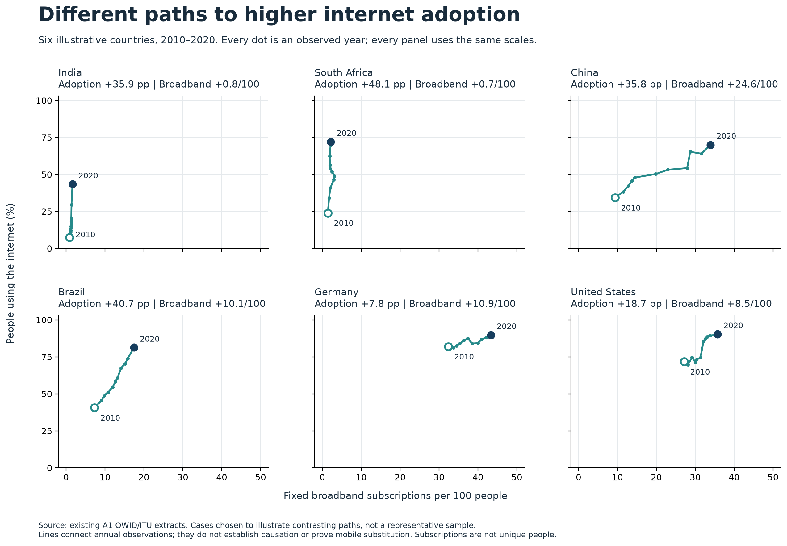
How to read
Each panel follows one country from 2010 to 2020. Open dots mark 2010 and dark dots mark 2020. Small dots show the intervening years. All panels use the same axes.
Why this chart
The network compares countries in one year. Small multiples add the history it leaves out. Each country gets its own panel, so its annual path can be followed without crossing five other paths. Shared axes make the size and direction of the changes comparable across countries.
Interpretation
South Africa’s internet use rose by 48.1 percentage points while fixed broadband rose by 0.7 subscriptions per 100 people. China gained 35.8 points in internet use and 24.6 broadband subscriptions per 100. A single 2020 value would hide these different paths.
India provides another low-broadband path: internet use rises by 35.9 points while fixed broadband rises by 0.8 per 100. Brazil gains 40.7 points alongside 10.1 more broadband subscriptions per 100. Germany starts at 82% online and gains only 7.8 points, leaving less room for growth. The six paths show why neither a shared endpoint nor a similar gain identifies one infrastructure history. These six examples illustrate different paths. They do not represent every country or prove what caused the change.
Takeaway
South Africa and China both make large gains in internet use, but their fixed-broadband gains are very different: about 0.7 versus 24.6 subscriptions per 100. A single endpoint would hide that difference. The annual paths show why similar progress does not imply the same infrastructure history.
Figure 3. NodeTrix: links and gaps after threshold filtering.

How to read
The overview replaces each non-singleton modularity group with an adjacency matrix and retains cross-group lines. The right view enlarges group 5, with 15 countries. Teal means similarity meets the global threshold; white means it does not. Gray diagonal self-pairs are excluded. Row labels show within-group degree.
Why this chart
Matrix cells make exact retained pairs and gaps checkable without relying on crowded lines. The detail group is selected reproducibly as the smallest group with at least five countries that is not a clique. Isolates are explicitly reported rather than silently dropped.
Interpretation
The revised threshold graph has 699 edges inside six non-singleton modularity groups and 98 between them. Twelve isolated country nodes are retained separately; they have no edges to place in a matrix. These groups summarize the retained graph and must not be read as continents, income classes or inherent country categories.
Group 5 contains 15 countries and 93 of its 105 possible pairs. Afghanistan has 14 internal links, while Angola has 7. Follow a named row across to a country column: teal shows a retained pair and white shows a below-threshold pair. The mirrored cell represents the same undirected pair, so count only one triangle.
Unlike an observed physical-network absence, white here is the result of filtering a measured pair score. Lowering the threshold can fill a white cell, and changing the threshold can change the modularity groups. The same all-pair data therefore supports several filtered views; the cutoff must always accompany a claim about connectedness or group membership.
Takeaway
Group 5 retains 93 of 105 possible pairs. Afghanistan has 14 within-group links and Angola has 7; a shared group label still hides differences in individual relationships.
Figure 4. Similar internet gains, different infrastructure changes.
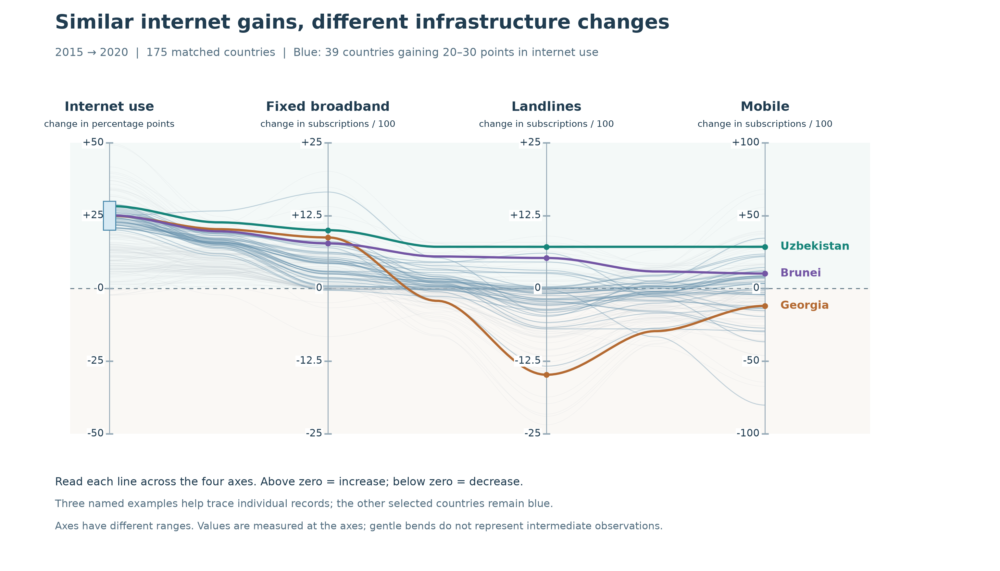
How to read
Each line connects one country's four changes from 2015 to 2020. At every axis, change is calculated as the 2020 value minus its 2015 value. Internet use changes in percentage points; the other axes show changes in subscriptions per 100 people. All 175 matched countries remain visible. Blue highlights the 39 countries that gained 20-30 percentage points in internet use; gray retains the other 136. Three selected examples are named and colored separately. The dashed horizontal line aligns zero on all four axes: above it means an increase and below it a decrease. Each axis has its own stated range.
Why this chart
The annual paths in Figure 2 compare internet use and broadband for six examples. This parallel-coordinate view connects all four changes for the full matched sample, so one country can be followed across several measures. Brushing a common range of internet gains asks what else changed among countries making broadly similar progress. Thin background lines retain the full sample, while three named records make the selected pattern easier to trace. The browser supports brushing, axis reordering, hover values and a straight-versus-gently-bundled comparison.
Interpretation
The highlighted countries gain between 20 and 30 percentage points in internet use, yet their lines spread apart on the infrastructure axes. Among these 39 countries, fixed-broadband change ranges from about -0.3 to +16.6 subscriptions per 100 people, landline change from -14.8 to +7.1, and mobile change from -80.2 to +34.5. Similar internet gains therefore occur alongside different combinations of reported telecom changes. The selection is a stated comparison range, not a country category discovered by an algorithm.
Georgia and Brunei make this distinction easy to follow. Internet use rises by about 25.0 points in Georgia and 25.1 in Brunei. Their fixed broadband also rises, by about 8.7 and 7.7 subscriptions per 100 respectively. The remaining axes separate them: Georgia loses about 14.8 landline and 12.0 mobile subscriptions per 100, while Brunei gains about 5.2 landline and 10.2 mobile subscriptions per 100. Even similar gains in both internet use and fixed broadband can hide changes in opposite directions on the other two measures.
Uzbekistan provides another selected example. Internet use rises by 28.3 points, alongside gains of about 10.0 fixed-broadband, 7.1 landline and 28.6 mobile subscriptions per 100. Its line stays above zero on every axis. Compare this with Georgia, whose internet and broadband gains sit above zero while its landline and mobile changes fall below it. The common zero position makes these direction differences visible without treating the four units as interchangeable.
This supports the change-over-time part of our main question: one adoption gain can hide several different changes in the other indicators. A 2020 snapshot cannot recover those paired changes. Figure 5 answers the separate question of what the country profiles look like at that endpoint; Figure 7 checks how the overall associations differ between levels and gains. This PCP adds the individual four-measure combinations behind those summaries.
Read exact changes at the axis intersections. The 20% bundle gently bends selected and remaining records toward their respective average paths between axes, while preserving the measured intersections. The curves between axes are drawing aids. Five-year differences also omit the annual timing inside the interval. Subscription changes are not counts of unique people, and these comparisons do not show which infrastructure change caused the internet-use gain.
Takeaway
Georgia and Brunei both gain about 25 percentage points in internet use and around eight fixed-broadband subscriptions per 100 people. Yet landline and mobile subscriptions fall in Georgia and rise in Brunei. Across the 39 selected countries, the four changes form many different combinations. Similar internet progress therefore does not describe one common infrastructure history; keeping each country connected across the axes reveals what a single gain or endpoint would hide.
Figure 5. Gentle bundles reveal different country profiles.
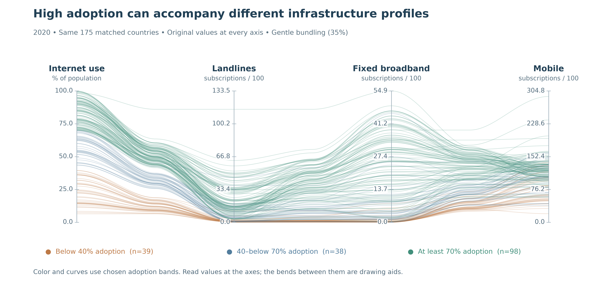
How to read
Each curve is one of the same 175 countries in 2020. The four vertical axes retain their original units and full matched-country ranges. Orange means below 40% internet use, blue means 40-below-70%, and green means at least 70%. Within each chosen band, curves bend gently toward the average profile between neighboring axes. The 35% setting preserves every measured axis intersection and keeps each bend between its two endpoint values. These bands are chosen comparison groups, not discovered country types.
Why this chart
Parallel coordinates keep four measurements connected for each country. Thin curves and three consistent colors make the full set easier to follow without replacing records with filled ribbons. Figure 4 compares five-year changes; this figure compares the country profiles at the 2020 endpoint. The two PCPs therefore ask different questions using the same matched countries. The browser lets the reader compare straight and bundled paths, brush ranges, reorder axes and inspect country values.
Interpretation
Start on the internet-use axis and follow the green curves toward fixed broadband. High-adoption countries occupy a wide range of broadband values, including countries close to zero. For example, Kuwait has about 99.1% internet use but only 1.7 fixed-broadband subscriptions per 100 people. Kyrgyzstan has 72.0% internet use and 4.3 fixed-broadband subscriptions per 100. Thus, a shared adoption band does not imply one infrastructure profile.
On the mobile axis, curves from different adoption bands overlap. Mobile subscriptions alone therefore do not neatly separate low- and high-adoption countries. The matrix in Figure 6 checks these relationships more precisely. Curves help trace records, but their apparent height or slope between axes has no measured meaning. Each axis has a different scale, so compare intersections and labelled values rather than the steepness of a curve.
This answers the relationships part of our main question: a summary such as high adoption can hide different combinations of the other indicators. The browser preserves each country for inspection instead of treating the colored bands as identical members.
Takeaway
The high-adoption band includes countries with very different fixed-broadband and landline values, while mobile values overlap across adoption bands. One adoption label therefore hides several infrastructure profiles. Gentle bundling helps follow the records, but exact comparisons still come from the axis values and browser selection.
Figure 6. Four telecom measures: associations and exceptions.
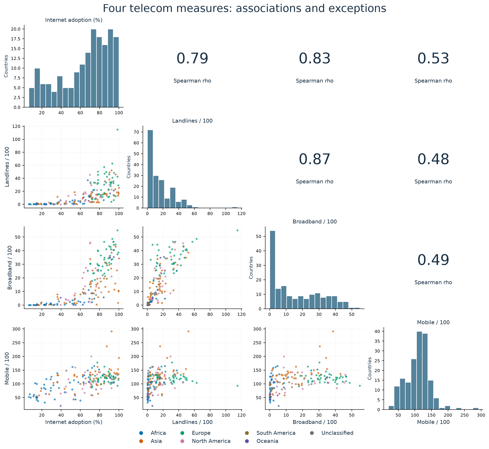
How to read
The four variables occupy the same row and column order: internet use, landlines, fixed broadband and mobile. Diagonal cells are country-count histograms. Below the diagonal, each dot is one country, with the column variable on the horizontal axis and the row variable on the vertical axis. Color shows region. Above the diagonal, the matching pair has its Spearman rank-correlation value. All cells use the same 175 countries in 2020.
Why this chart
The two adoption scatterplots in A1 already compared broadband and mobile. Restoring the full scatterplot matrix adds the four other pairs, the individual distributions and a common sample. Each relationship can be checked in its own scatter cell rather than inferred from a single correlation number. This also gives a position-based check on the four-variable parallel-coordinate profiles.
Interpretation
Start with the broadband row and internet-use column: the upward cloud corresponds to the 0.83 value above the diagonal. The mobile-versus-adoption pair is more scattered and has a lower value, 0.53. This repeats A1's broad observation, but now uses 2020 matched-country data and rank correlation, rather than the 2024 adoption comparison.
The rest of the matrix adds the information that the two-panel version omitted. Landlines and broadband have the strongest pairwise rank association, about 0.87. Landlines and adoption are also strongly related, at 0.79, while mobile has weaker relationships with landlines and broadband, about 0.48 and 0.49. The diagonal histograms show many countries near low fixed-infrastructure values, while mobile counts spread well above 100 subscriptions per 100 people. Such counts can exceed 100 because they measure subscriptions rather than unique people.
Spearman correlation compares the ordering of countries: values closer to 1 indicate a more consistently increasing relationship. It does not require the points to lie on a straight line. Check the scatter cell as well as the coefficient for exceptions and shape. The colors show regional composition, but these pooled coefficients do not describe a separate within-region relationship.
For 2015-2020 gains, broadband and internet-use changes have a rank correlation of only about 0.054. Thus, even the stronger 2020 level relationship cannot explain each country's progress. Figure 7 directly compares the level and gain relationships for all three infrastructure measures.
Takeaway
Fixed broadband has a stronger rank association with internet use than mobile does, 0.83 versus 0.53, while landlines and broadband also move together strongly across countries, at 0.87. The scatter cells preserve exceptions that a coefficient alone would hide. These are relationships between 2020 country levels, not explanations of how each country changed.
Figure 7. Country levels and country gains tell different stories.
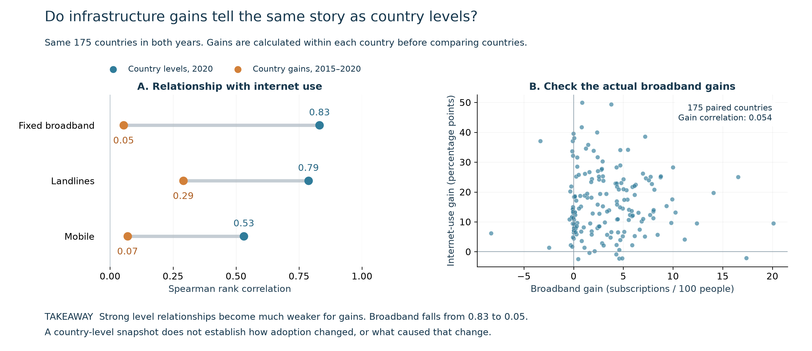
How to read
The left panel compares Spearman rank correlations with internet use for fixed broadband, landlines and mobile. Blue dots use 2020 country levels; orange dots use each country's 2020-minus-2015 gains. Each gray line joins the two correlations for one measure. The right panel shows the actual broadband and adoption gains, with one dot per country. Both comparisons use the same 175 complete country pairs. Correlation describes how consistently two variables increase together across countries.
Why this chart
Figure 6 shows relationships between country levels. Repeating the comparison after calculating each country's gain tests whether that snapshot relationship carries over to progress. The paired-dot chart compares all three measures without repeating six scatterplots. The broadband-gain scatterplot keeps the underlying observations visible, so the coefficients can be checked against the shape of the data.
Interpretation
For 2020 levels, the broadband-adoption correlation is about 0.83. Countries with more fixed broadband generally also have higher internet use. When we compare gains within the same countries, that value falls to about 0.05. The right panel shows why: countries with similar broadband gains have widely different adoption gains, rather than forming a clear upward pattern.
The distinction is not limited to broadband. Landlines fall from about 0.79 for levels to 0.29 for gains, and mobile falls from 0.53 to 0.07. All three relationships are weaker after changing the question from which countries have more to which countries gained more. The same country set is retained, so a change in sample membership does not explain the contrast.
This directly answers the snapshots part of our main question. A strong relationship in one year cannot be used as evidence that the same infrastructure gain accompanied adoption progress within countries. This is a descriptive comparison, not proof that infrastructure has no effect: rank correlation alone does not establish causes, account for earlier investment, or model delayed effects. The annual paths in Figure 2 retain timing for selected countries. Figure 4 keeps four changes connected for each country, showing the different combinations behind this overall result.
Takeaway
Broadband and adoption have a strong relationship in 2020 levels, about 0.83, but almost no rank relationship between their 2015-2020 gains, about 0.05. Landline and mobile relationships also weaken for gains. A snapshot can show which countries have more, while leaving their different paths of progress hidden.
Figure 8. Internet users grouped by region.
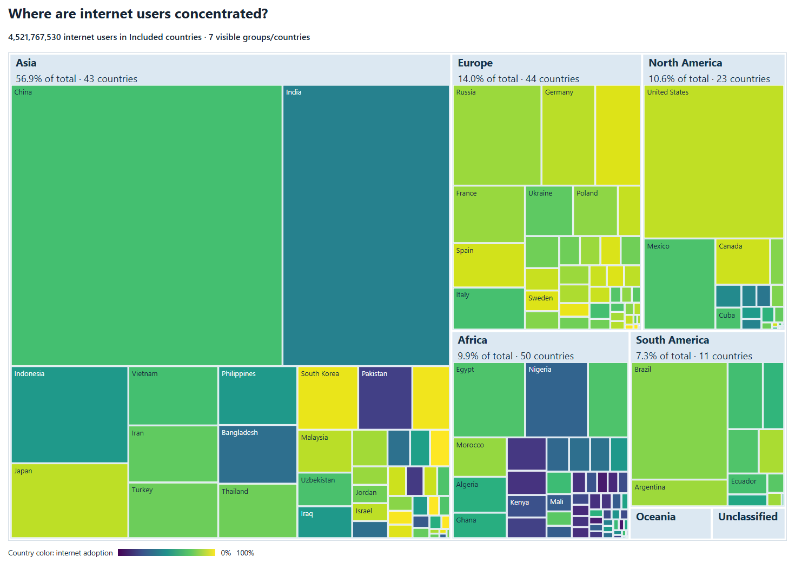
How to read
Large rectangles are regions; smaller country rectangles sit inside them. Area shows the number of internet users. Country color shows the percentage of people online. Group headers show each region’s share of the included total.
Why this chart
A country with a high internet-use rate can still have fewer users than a large country with a lower rate. The nested treemap separates these two quantities: area shows the count and color shows the rate. Region-first grouping answers where the included users live, while keeping countries inside their regions.
Interpretation
Asia accounts for about 56.9% of the 4.52 billion included internet users, compared with 14.0% in Europe. China and India occupy large areas because they have many internet users. Their different colors show that large user counts do not necessarily mean the same adoption rate.
The total is 4,521,767,530 users in the included countries. Europe has a relatively high adoption rate in many tiles but a smaller user-count area than Asia. Reading only area would confuse population scale with access; reading only color would miss where most users live. The next figure changes the first grouping to test the same distinction from another angle.
Takeaway
Asia contains about 56.9% of the included internet users, but a large rectangle does not mean that a large percentage of its population is online. Area answers how many users live there; country color answers how widely access has spread. Both are needed to distinguish population size from adoption.
Figure 9. The same users grouped by adoption band.
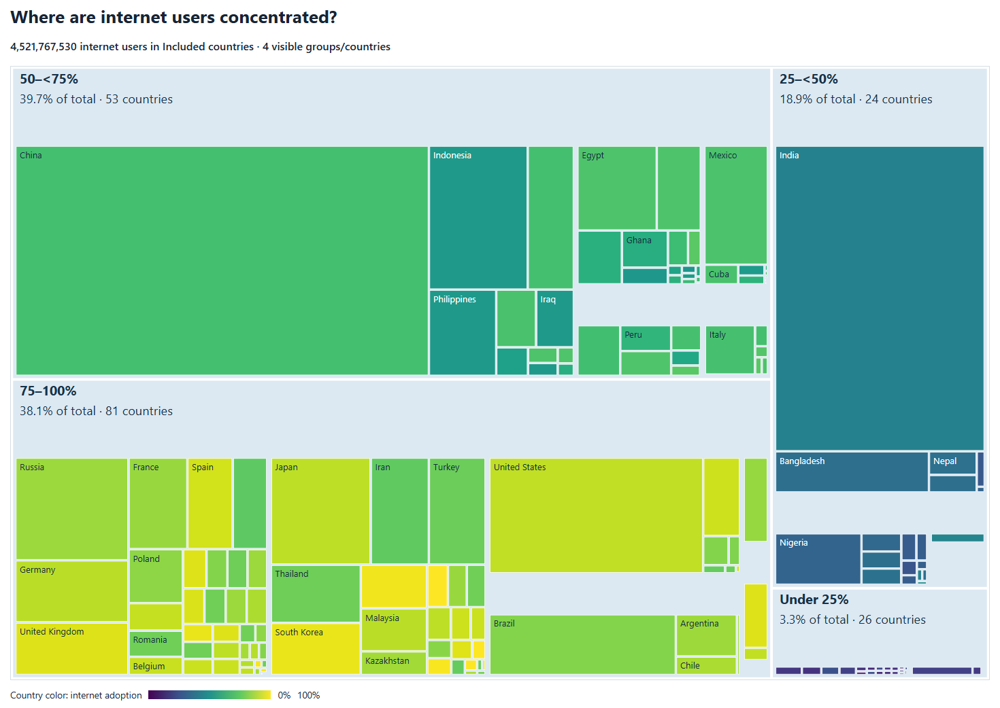
How to read
This treemap uses the same 184 countries and total as Figure 8. It first groups countries by internet-use band, then by region. Area still shows user count and country color still shows internet use.
Why this chart
The first treemap makes regional size prominent. Reversing the hierarchy asks which adoption levels contain those users. Keeping the country data, total area and color scale fixed isolates the effect of grouping. The two trees therefore answer different questions with the same records.
Interpretation
Countries in the 50–below-75% band contain about 39.7% of included users. Countries in the 75–100% band contain about 38.1%. A large share of online users therefore lives in countries where many people are still offline. Changing the grouping makes this visible without changing any country measurement.
Together, the two highest bands contain about 77.8% of the included users, but the 50-below-75% band is slightly larger than the 75-100% band. The band title describes the national adoption rate, not the status of every person inside the tile. All areas still count online users. Offline people are not drawn as a second population in this treemap. Adoption bands are chosen categories. The browser lets the reader zoom in and inspect exact country values.
For example, moving a country from a region-first branch to an adoption-first branch does not change its user count or adoption color. It changes which countries surround it and which total the parent heading summarizes. Compare the band totals at the root before zooming into a branch; zooming changes the displayed denominator.
Takeaway
The 50-below-75% band contains slightly more included users than the 75-100% band, 39.7% versus 38.1%. Many online users therefore live in countries where a substantial share of people remain offline. Changing the hierarchy exposes that fact while keeping every country value and the overall total unchanged.
Figure 10. Did countries that started behind catch up?
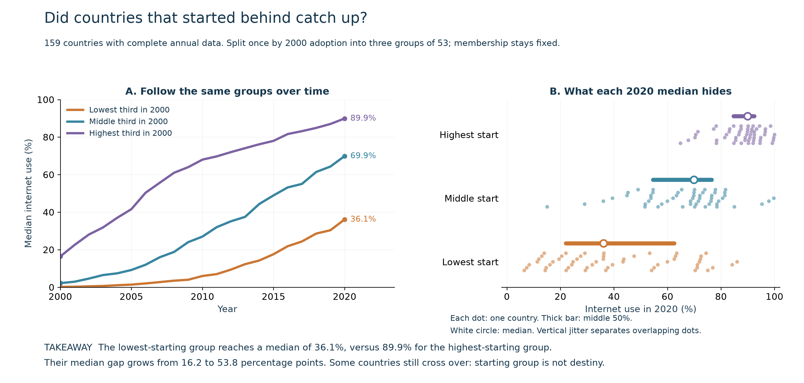
How to read
The 159 countries with complete 2000-2020 records are ranked once by their internet use in 2000 and divided into three groups of 53. Orange is the lowest starting third, blue the middle third and purple the highest third. Membership stays fixed in every year. The left panel follows each group's yearly median. The right panel shows every country's 2020 value; the thick bar spans the middle half and the white circle marks the median. Small vertical offsets separate overlapping country dots and have no data meaning.
Why this chart
Yearly distributions can improve even when the countries that started behind remain behind. Keeping the same initial groups follows those countries instead of replacing them with whichever countries occupy a percentile later. The median paths show the group contrast over time; the individual dots prevent a group summary from hiding exceptions. This complements the later ridgelines, which compare overall and regional distributions.
Interpretation
The lowest-starting group improves from a median of about 0.2% internet use in 2000 to 36.1% in 2020. The middle group moves from 2.2% to 69.9%, and the highest group from 16.4% to 89.9%. All three groups improve substantially, yet their median levels remain far apart at the endpoint.
The gap between the highest- and lowest-starting medians grows from 16.2 to 53.8 percentage points. Thus, broad progress does not mean that the initially low-adoption countries catch up in absolute percentage-point terms. The contrast is not caused by moving countries between groups: the original members remain together. A supporting check using four and five initial groups also finds a wider endpoint gap. This concerns an absolute gap; it does not imply that every relative inequality measure worsens.
The right panel adds an important qualification. Some initially low-adoption countries finish above countries in the higher-starting groups. Initial group membership is therefore not a prediction for every country. The dots show both persistent group differences and individual exceptions.
This answers the inequality-and-change part of our main question: one improving overall summary can hide unequal progress among the same countries. Countries have equal weight here. These are comparisons of national adoption rates, not population-weighted estimates of the world's internet users, and they do not identify why countries progressed differently.
Takeaway
All three fixed starting groups improve, but the lowest-starting group reaches a 2020 median of 36.1%, compared with 89.9% for the highest-starting group. Their absolute median gap widens from 16.2 to 53.8 percentage points. Overall progress therefore hides persistent differences, while the individual dots show that some countries cross the group pattern.
Figure 11. Country differences inside each region.
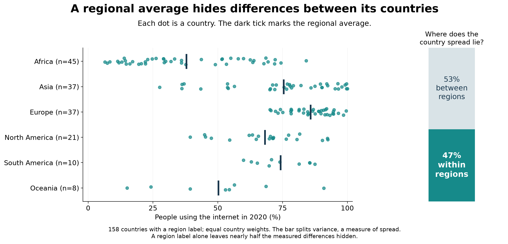
How to read
Each dot shows one country’s 2020 internet-use rate. A dark tick marks the regional average. The bar on the right divides the total spread into differences within regions and differences between regional averages.
Why this chart
A regional mean is one mark, even when its countries are far apart. Showing every country beside that mark reveals the spread directly. The variance split then gives a single numerical answer to how much of the total country variation sits inside regions. This extends the regional comparison without repeating A1's absolute-gap and ratio plots.
Interpretation
About 47% of the measured country spread lies within regions; about 53% lies between regional averages. Countries in Asia, Africa and North America cover wide ranges. Knowing a country’s region therefore gives only part of the picture. The dots show the countries that an average would hide.
The calculation uses variance, which measures how far values lie from their mean. Total country variance is split into spread around each regional mean and spread between the regional means, weighted by the number of countries. The 47% is a share of this measured spread, not a share of internet users or a claim that region causes the remaining 53%. The visible dots provide the practical interpretation: countries within one region can still be far apart.
Takeaway
About 47% of measured country variation in 2020 lies within regions, so knowing the regional mean leaves nearly half of this spread unseen. The country dots show what that means in practice: members of one region can have very different adoption rates. This adds information that a single regional average cannot provide.
Figure 12. Regional change and individual country gains.
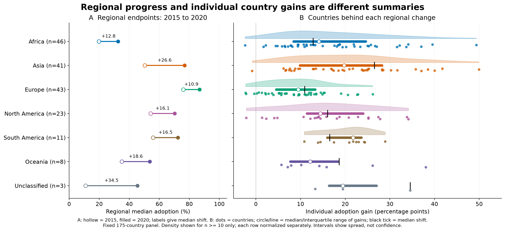
How to read
The left panel shows 2015 and 2020 regional medians. The right panel shows each country’s own gain. A thick line marks the middle half of gains; the open circle is the median gain. The black tick repeats the shift in the regional median.
Why this chart
Subtracting two regional medians sounds like the typical country's gain, but the middle country can change between years. The paired endpoint view shows the regional summaries, and the gain view calculates change for each country first. Putting the two calculations together exposes the difference instead of asking the reader to infer it from separate tables.
Interpretation
Asia’s regional median rises by 26.55 percentage points, but its median individual country gain is 19.75 points. South America’s regional-median shift is 16.54 points, while its median country gain is 21.76 points. These are different calculations and can even give different regional rankings.
For Asia, individual gains range from about -0.84 to 49.94 points, and the middle half lies between 9.86 and 28.25. A single regional shift hides that range. The correct calculation depends on the question: subtract regional medians to describe movement of the regional middle, or calculate each country's change first to describe the typical country gain. These two operations need not give the same answer.
Read one region across both panels. First subtract its two endpoint medians in the left panel. Then find the open median-gain circle in the right panel and compare it with the black endpoint-shift tick. Their separation is the visible answer to the question. Each small dot on the right is one country's paired change; the smooth shape summarizes those dots rather than adding observations.
Takeaway
Asia gains 26.55 points when its two regional medians are subtracted, but 19.75 points when each country's gain is calculated first and then the median is taken. The two answers describe different things. To discuss a typical country's progress, preserve its paired observations before summarizing the changes.
Figure 13. Country horizon plots.
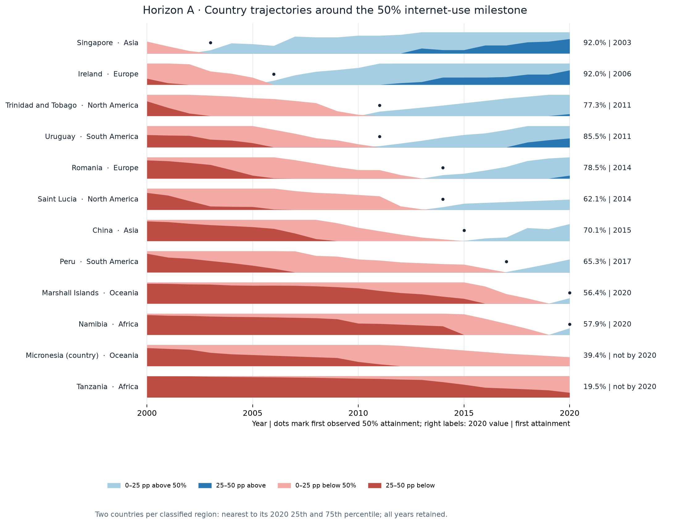
How to read
Each row follows one selected country from 2000 to 2020. Red means below 50% internet use and blue means above it. Darker bands mean a larger distance from 50%. Right labels show the 2020 value and first observed 50% year.
Why this chart
Many full-size time-series panels would take more space. Horizon rows fold values around a meaningful 50% reference, keeping all 21 years in a compact display. Sorting by first crossing makes early and late arrivals easy to scan. The numerical endpoint labels help read values that are harder to recover from folded bands.
Interpretation
Singapore first reaches 50% in 2003, China in 2015, and Namibia in 2020. Tanzania remains below 50% at the end. The rows show timing that would be lost in a 2020 snapshot. Two countries are chosen from each classified region using its 2020 lower and upper quartiles.
Ireland crosses in 2006 and Peru in 2017, while Micronesia, like Tanzania, has no observed crossing by 2020. These rows show individual crossing times behind the group summaries. The selected countries are chosen by a stated quartile rule, rather than only choosing memorable successes. Folding the bands saves space, but the color reference must be read carefully: a red row can still be rising quickly toward 50%.
A horizon plot folds bands back into the same row. Here a first band covers 0-25 percentage points from 50%, and a second, darker band covers the next 25 points. Read the sign from red or blue, then the band darkness and visible height. Do not add the two sides as if they were separate countries. This folding saves height but makes the printed endpoint labels useful for exact values.
Takeaway
Singapore reaches majority internet use in 2003, China in 2015 and Namibia in 2020, while Tanzania has no observed crossing by the endpoint. The horizon rows keep these different journeys visible in a compact space. Red means below 50%, so it must not be mistaken for declining adoption.
Figure 14. Regional median horizon plots.
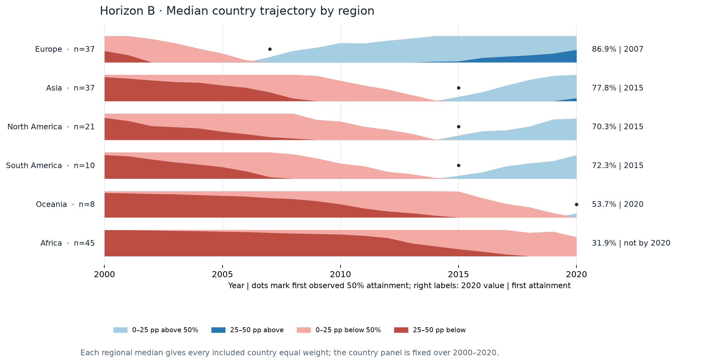
How to read
Each row shows the yearly median internet-use rate for one region. The 50% reference and band colors match Figure 13. The same countries are used in every year.
Why this chart
Repeating the horizon design for regional medians tests how much the story changes after aggregation. The same reference and colors allow a direct comparison with Figure 13. One compact row per region makes broad timing clear, while the preceding country plots show what each regional row leaves out.
Interpretation
Europe reaches majority use earlier than the other regional medians. Its 2020 median is 86.86%, while Africa’s is 31.89%. Asia’s row shows a later crossing. These compact rows make the broad timing easy to compare, while Figure 11 shows the country differences hidden by each row.
The gap between the European and African medians is about 55 percentage points in 2020. Yet each row compresses many different countries into one value per year. Figure 11 shows why the regional result cannot be assigned to every member, and Figure 12 shows why its change cannot automatically be read as a typical country gain. Together the views distinguish group timing from individual progress.
Takeaway
Europe's 2020 median is about 86.9%, compared with 31.9% in Africa, and the rows also show different times of crossing 50%. A regional trajectory summarizes both timing and level, but still hides its member countries. It should be read alongside the individual paths and within-region spread.
Figure 15. How the country distribution changed.
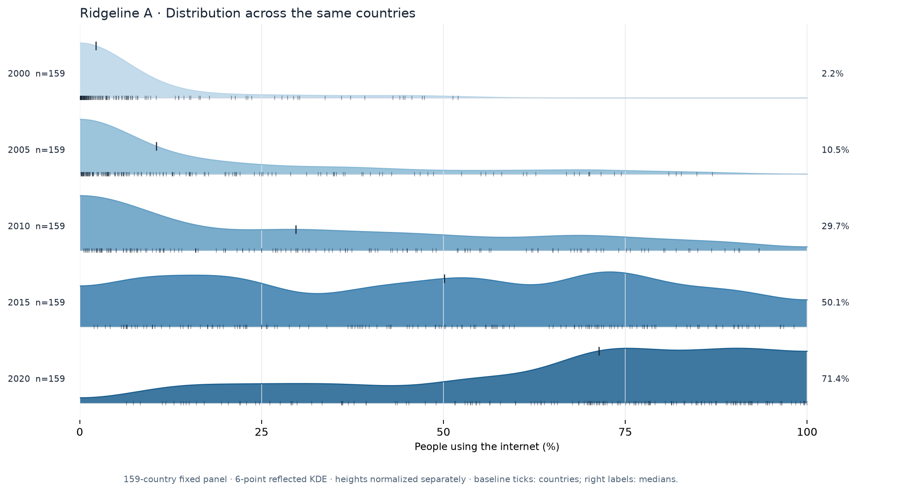
How to read
Each ridge shows the distribution of internet use across the same 159 countries in one year. All ridges share the 0–100% scale. Small ticks show countries, and right labels give the median.
Why this chart
A rising median could mean that countries moved together or that some moved much faster than others. Ridgelines retain the whole distribution at several dates. A common horizontal scale shows the shift, while country ticks help check the smooth shapes against the actual observations.
Interpretation
The median rises from 2.2% in 2000 to 71.4% in 2020. Early values sit near zero; later values cover much of the scale. The rightward shift shows broad progress, but the wide 2020 distribution shows that countries have not all reached similar levels.
The middle half of country values still spans about 37.5 percentage points in 2020. That wide spread qualifies the large median increase: broad progress does not mean all countries are close to the same level. Each curve has its own height scaling, so the horizontal location and width carry the comparison; a taller peak does not mean that the year contains more countries.
Read each ridge from left to right as low to high adoption. A bulge marks a range where many country values lie close together. The smooth curve spreads each observation over a small neighborhood, so it is an estimated shape, not a count at every percentage. The country ticks below it show the actual values; the common horizontal scale carries the comparison across years.
Takeaway
The country median rises from 2.2% to 71.4%, yet the middle half of 2020 values still spans about 37.5 percentage points. Broad improvement therefore does not mean countries have reached similar levels. Reading the distribution alongside the median reveals the uneven progress that one average would hide.
Figure 16. How distributions changed within regions.
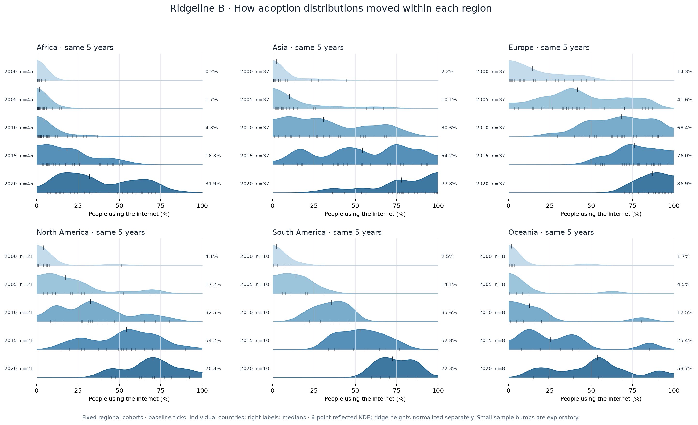
How to read
Each panel repeats the ridgeline view within one region for 2000, 2005, 2010, 2015 and 2020. All panels use the same internet-use scale. Country ticks and median labels help check the smooth curves.
Why this chart
The global distribution mixes countries from different regions. Small multiples repeat the ridgeline comparison within each region, so a broad global shape can be traced to different regional paths. Shared horizontal scales keep low and high adoption in the same position across all panels.
Interpretation
Europe’s ridges move toward high internet use earlier. Africa’s later ridges still cover low and middle values. Asia has a broad spread before moving farther right. Oceania has only eight included countries, so the individual ticks are especially useful there.
The regional panels explain why one global curve cannot describe a single common journey. Europe reaches the upper part of the scale earlier, while lower and middle values remain more prominent in Africa. Within-region spreads also change, so even the regional median horizon is only part of the story. In small panels such as Oceania, the eight country marks are stronger evidence than an attractive bump in the fitted curve.
Takeaway
The global shift toward higher internet use contains different regional histories: Europe moves toward high values earlier, while lower and middle values remain more prominent in Africa. The width of each distribution also matters. In small groups such as Oceania, check the individual country ticks before treating a smooth bump as a stable pattern.
Figure 17. How color choices change the view.
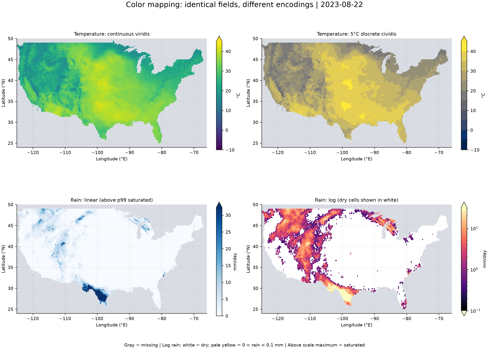
How to read
The panels keep the weather field and date fixed. All four palettes are sequential colormaps: their colors progress from lower to higher values. Temperature uses continuous viridis and cividis split into 5°C bands. Rain uses Blues with a linear scale and magma with a logarithmic scale. Palette choice and scale normalization are separate choices. Read each color bar before comparing the maps.
Why this chart
A palette or scale can make a feature stand out even when the measurements do not change. These panels hold the field fixed and change only its mapping to color. Sequential colormaps suit these ordered magnitudes because no middle value needs special emphasis. Temperature tests palette choice; rainfall tests how the scale reveals smaller values alongside heavy rain.
Interpretation
Most rain values are small and a few are large. A linear scale gives the large values most of the visible contrast. A logarithmic scale makes lighter rain easier to see. Changing a temperature palette also changes which boundaries stand out. The underlying measurements stay the same.
The rainfall comparison is especially useful because a few wet cells can set the top of the linear range and leave many other cells nearly the same color. Logarithmic mapping spreads positive small values apart, but its color steps represent ratios rather than equal millimeters. The legend is therefore part of the explanation. Zero rainfall is excluded from that logarithmic mapping because its logarithm is undefined.
Takeaway
The same rainfall measurements look different on linear and logarithmic scales because each assigns contrast differently. Linear color emphasizes large absolute amounts; logarithmic color separates smaller positive amounts. A visually stronger feature is therefore not automatically more rain. The color bar and the question being asked must guide the reading.
Figure 18. Fixed and daily color scales.
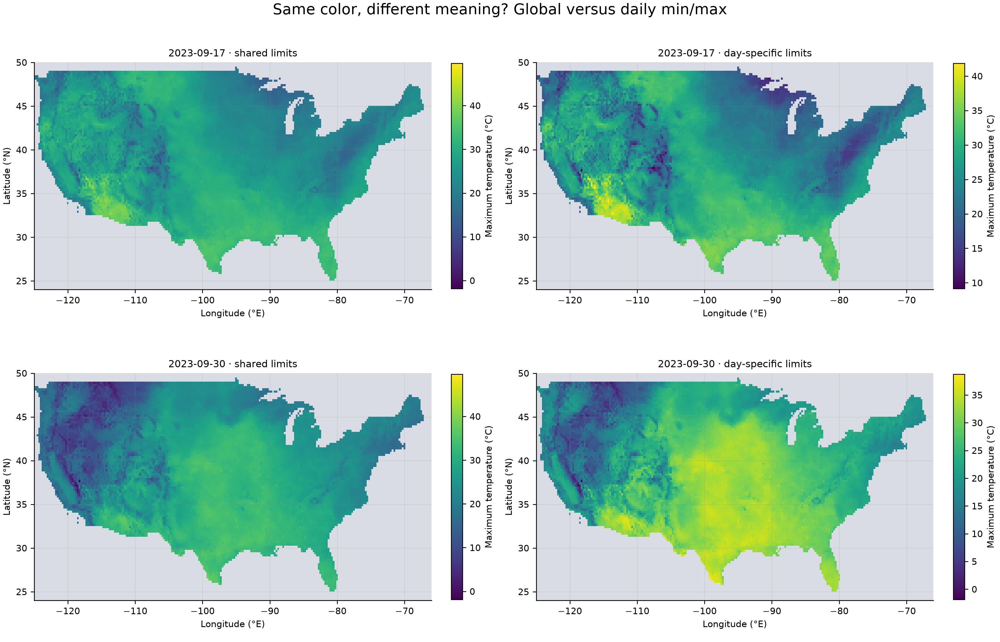
How to read
The left column uses one temperature range across the eight sampled dates. The right column rescales each date to its own minimum and maximum. Both columns show the same fields.
Why this chart
An animation can look equally warm on every date if each frame is rescaled separately. The two columns test this with identical daily fields. One scale preserves comparisons between dates; the other spends its full color range on the variation within each date. Neither choice can be understood without checking the color bars.
Interpretation
Daily scaling makes local differences easier to see, but a bright color can represent different temperatures on different dates. A fixed scale supports comparisons across dates. Daily scaling supports comparison within one date. The GIFs repeat this comparison over all eight sampled fields.
The fixed range is obtained from the eight sampled dates. It supports comparisons across those frames, while making no claim to cover all possible temperatures outside them. This choice is carried into the date-comparison GIFs. A viewer can then read a repeated color as a repeated temperature instead of interpreting a repeated hottest color as the same absolute heat. The normalized position is u = (T - minimum) / (maximum - minimum). Global mapping uses the minimum and maximum across all sampled dates; local mapping uses the bounds of each date. Thus a fixed temperature keeps its color only with the global bounds.
Takeaway
Daily rescaling makes each date's internal differences clearer, but the same bright color can then mean different temperatures on different dates. A fixed scale preserves the between-date comparison. For an animation about changing temperature, that consistency matters more than making every frame use its full color range.
Figure 19. Contour intervals and filled contours.
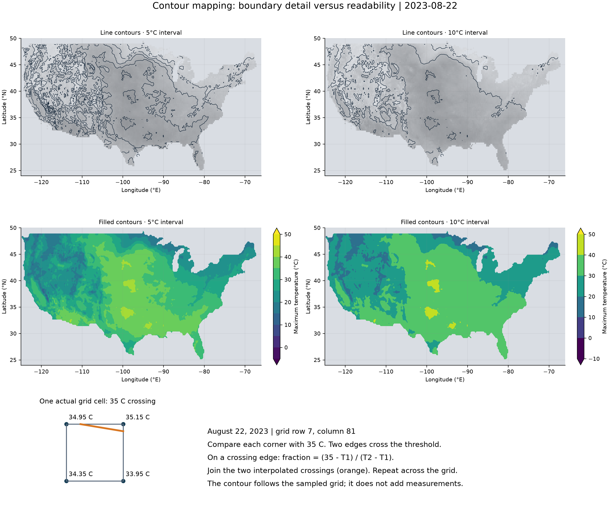
How to read
The same August 22 temperature field is drawn with 5°C and 10°C intervals, using lines and filled bands. Levels and color bars show the thresholds used.
Why this chart
Contours turn a continuous field into visible boundaries. Using the same date with two intervals separates the effect of boundary spacing from actual weather differences. Lines make threshold crossings explicit, while filled bands make broad areas easier to compare. The four panels test both choices on the same grid.
Interpretation
Five-degree intervals show more boundaries than ten-degree intervals. Filled bands help compare larger warm and cool areas; line contours expose individual thresholds. Matplotlib/ContourPy traces the regular grid using the Marching Squares family of algorithms. This fits the two-dimensional grid and keeps missing cells masked.
The grid is regular and two-dimensional, so the plotting library traces threshold crossings through neighboring grid cells using the Marching Squares family of methods. Missing cells stay masked. Choosing a smaller interval changes how many boundaries are drawn, rather than adding finer source measurements. The interval should therefore be selected for the required reading task, not treated as improved data resolution.
The inset uses one actual August 22 grid cell. Its corner temperatures straddle 35 degrees. Linear interpolation locates the two edge crossings; joining them gives the contour segment for that cell. Repeating this step across neighboring cells traces the boundary.
Takeaway
Five-degree contours reveal more temperature boundaries than ten-degree contours, while filled bands make broad warm and cool areas easier to compare. The underlying grid is identical in all panels. More visible lines therefore mean a finer display choice, rather than new observations or better source resolution.
Figure 20. Monthly temperature maps.
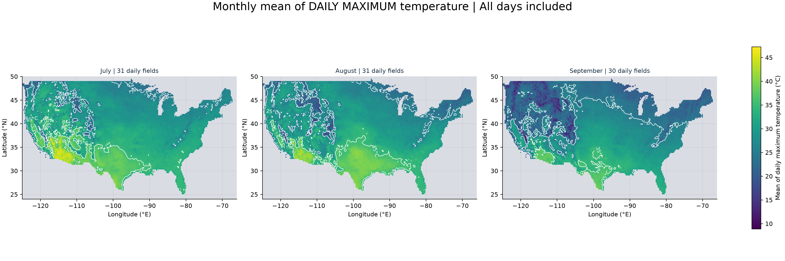
How to read
Each map averages daily maximum temperature over one month. All maps use the same Celsius scale and the same 25°C and 35°C contour levels.
Why this chart
After testing color and contours, we use fixed choices to compare complete months. Shared colors let a temperature be recognized across all three maps, and common contour levels give reference boundaries. Using every day avoids choosing one unusually hot or cool date to represent a month.
Interpretation
The mean of daily maximum temperature falls from 31.19°C in July to 26.55°C in September over the weighted study area. Warm conditions remain visible in parts of the south. The fixed colors allow direct comparison, while the contours show where the stated temperature levels occur.
The difference is a fall of 4.64 degrees in the area-weighted mean. That is a change in the average daily maximum, rather than a count of hot days or the single hottest day. Those are separate questions. The next views subtract the months directly, then restore daily timing and hot-day frequency to show the information lost by this monthly summary. These are monthly averages of daily maxima, not monthly extremes or averages of every hourly temperature.
Takeaway
Mean daily maximum temperature falls from 31.19 degrees in July to 26.55 in September, while the maps show where warmth remains. Shared colors make that cooling directly comparable across months. The result describes monthly averages; daily ribbons and hot-day frequencies are needed to understand the episodes hidden inside them.
Figure 21. Monthly change versus two selected dates.
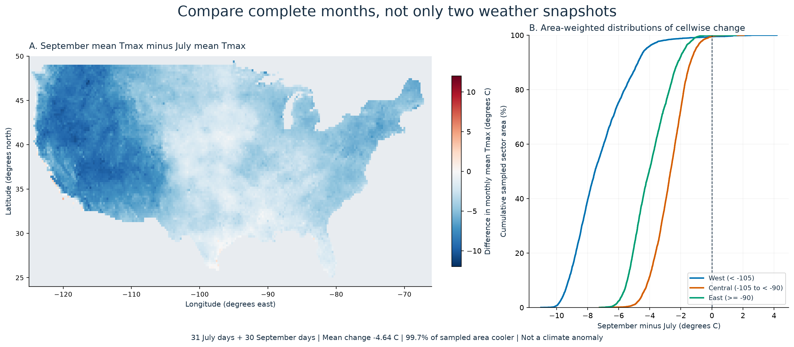
How to read
The map subtracts July’s mean daily maximum temperature from September’s. It uses the diverging colormap RdBu_r, with equal negative and positive limits centered on zero. Blue means cooling, red means warming, and the pale center means no change. The curves summarize changes across three longitude bands.
Why this chart
Three maps show overall cooling but make small spatial differences difficult to compare. A diverging colormap suits a difference map because zero is a meaningful reference: it separates cooling from warming. Symmetric color limits show the sign and size of change around that neutral center. The cumulative curves show how widespread each change is within longitude bands, rather than reducing each band to one mean.
Interpretation
The area-weighted mean change is −4.64°C, and 99.66% of the study area is cooler. A comparison using only the first and last sampled days disagrees with this monthly result in sign over 18.26% of the area. Two dates can therefore give a different impression of the season.
A negative mean alone could be produced by strong cooling in a small area. The 99.66% area result shows that cooling is widespread here. The comparison with first and last sampled dates then tests the snapshot problem directly: a pair of daily weather states does not summarize all the days in their respective months. The longitude-band curves show how the size of change also varies across the study area.
Takeaway
The monthly comparison shows cooling across 99.66% of the study area, with an area-weighted mean change of -4.64 degrees. Using only the first and last sampled days gives the opposite sign in 18.26% of the area. Two daily snapshots can therefore misrepresent a change that is clear when complete months are used.
Figure 22. Daily temperature and its spatial spread.
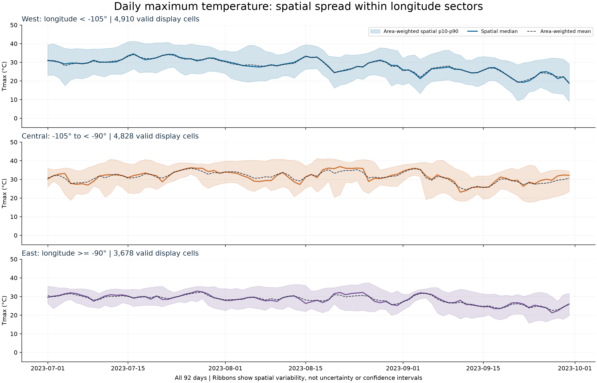
How to read
Each panel shows one longitude band across all 92 days. The dark line is its area-weighted mean daily maximum temperature. Nested ribbons show the middle half and the middle 80% of grid-cell temperatures.
Why this chart
Monthly averages hide both short episodes and differences between places. A daily line restores timing, while the ribbons retain the range of temperatures across locations. Separate longitude panels keep the regional patterns readable without overlaying six shaded bands on one set of axes.
Interpretation
The ribbons remain wide even when the average changes smoothly. Places within a band can therefore experience quite different temperatures on the same day. Warm and cool episodes are also visible within each month. A single monthly mean would hide both the daily timing and this spatial spread.
The inner ribbon runs from the 25th to the 75th percentile, and the outer ribbon from the 10th to the 90th. For example, a broad ribbon means that places in the same longitude band have different daily maxima even if the average line is steady. The ribbons should not be read as statistical confidence around that line; their subject is spatial variation in the observed field.
Takeaway
A smoothly changing daily mean can still hide large temperature differences between places, which appear in the ribbons. Keeping every day also reveals warm and cool episodes within a month. The bands describe spatial spread, so they should not be read as uncertainty around the mean line.
Figure 23. Monthly rain totals and five-day bursts.

How to read
The top row shows monthly rain totals on one scale. The bottom row shows the share of each month’s rain that falls in its wettest five consecutive days. Cells with less than 10 mm monthly rain are masked in the bottom row.
Why this chart
A monthly rainfall total cannot distinguish steady rain from a short burst. The second row adds the share falling in the wettest five consecutive days. Keeping total and concentration separate avoids calling a very small rain amount a major event simply because all of it fell at once.
Interpretation
July and August have similar weighted mean totals, about 75 mm. The five-day comparison shows different timing. In September, 77.6% of eligible weighted area receives at least half its monthly rain in one five-day window, compared with 43.8% in July. A monthly total alone cannot show this concentration.
August also has a larger concentrated-rain share than July: 67.5% of its eligible area receives at least half its monthly rain in a five-day window. September has a lower weighted mean total, about 57.1 mm, but the largest concentration share. Amount and timing therefore give different comparisons. The 10 mm screen avoids unstable percentages from nearly dry cells; the supporting calculation repeats it with other minimum totals.
Takeaway
July and August have similar weighted mean rain totals, about 75 mm, but the share concentrated into five days differs. September has a lower total and the largest concentration share: 77.6% of eligible area receives at least half its rain in one five-day window. Amount alone does not describe how rain arrived.
Figure 24. Where hot days are frequent.
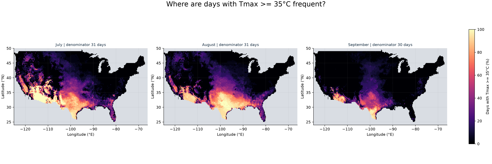
How to read
Each map shows the percentage of days in a month with daily maximum temperature at least 35°C. The three maps share one 0–100% scale.
Why this chart
A monthly mean temperature does not count how often a chosen hot threshold was exceeded. Frequency maps use all days and preserve location, making repeated heat distinguishable from one selected hot day. The fixed percentage scale lets July, August and September be compared directly.
Interpretation
The weighted mean hot-day frequency falls from 22.8% in July to 8.9% in September. The maps show where frequent heat remains concentrated. Unlike one hot-day snapshot, this view counts every day in each month and separates repeated heat from a single selected event.
The frequency denominator is the number of days in the month, so different month lengths do not create a difference merely by changing the count. A 50% cell has reached the threshold on half its days, whether those days are consecutive or scattered. That distinction leads to the final run-length analysis, where uninterrupted duration is calculated explicitly.
Takeaway
The weighted mean frequency of days reaching 35 degrees falls from 22.8% in July to 8.9% in September. These maps count repeated heat across all days, rather than show one selected event. They still cannot tell whether those hot days occur together in one long spell; that requires a run-length calculation.
Figure 25. Daily weather across longitude.
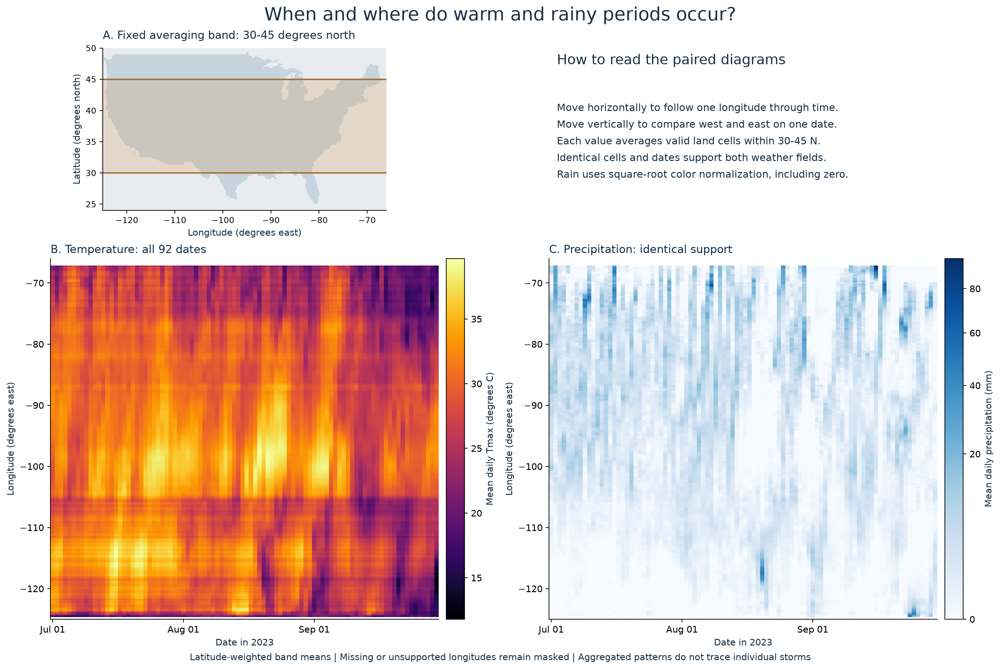
How to read
Time runs vertically and longitude horizontally. The top panel shows an area-weighted fixed-threshold heat summary. The other panels show temperature and rain averaged across latitude, retaining every day.
Why this chart
Maps preserve location but require many frames to show all 92 days. A time-longitude diagram keeps every date visible in one view. Averaging across latitude makes room for that time axis, so episodes can be compared by their dates and east-west extent rather than remembered across an animation.
Interpretation
The diagrams reveal warm episodes and short rainy periods that monthly maps smooth over. Some temperature features extend across several longitudes, while rain is often more concentrated in time and location. The full-period view makes it easier to compare the timing of these patterns.
The daily ordering can reveal a short episode that contributes only a small part of a monthly average. However, each longitude column combines locations at different latitudes. A feature running across columns is a pattern in these summaries; it is not, by itself, the path of a particular storm. The monthly maps and daily ribbons retain complementary spatial detail.
Takeaway
Keeping all 92 dates reveals short warm and rainy episodes that monthly maps smooth over, and shows their east-west extent. The space-saving step is averaging across latitude, which removes north-south detail. Use the diagram for timing across longitude and return to maps when the exact location matters.
Figure 26. Wind-arrow density and length.
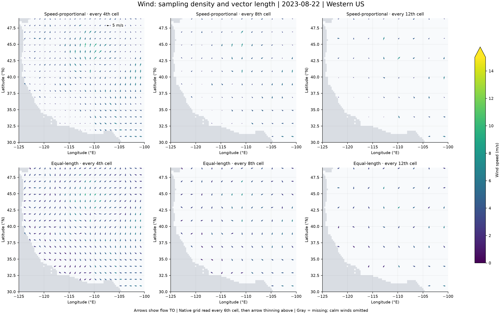
How to read
The panels show the same western-US wind field with different sampling gaps. The top row scales arrow length by speed; the bottom row uses equal lengths. Color gives speed in both rows. Arrows point toward the flow direction.
Why this chart
An arrow map can become unreadable before it becomes informative. Holding the wind field fixed while varying spacing shows how much local detail is traded for legibility. Comparing speed-scaled and equal-length arrows also separates the tasks of reading direction and reading magnitude.
Interpretation
Dense arrows retain more locations but can overlap. Wider sampling gaps make direction easier to read while omitting detail. Proportional lengths show speed as well as direction. Equal lengths make weak-wind directions more visible, so the color bar is needed to read speed.
The source wind direction states where the wind comes from. The arrow components are converted so that the plotted arrow points toward its flow destination. Keeping that convention explicit prevents a 180-degree reading error. Equal-length arrows are helpful for comparing directions, but their length no longer indicates speed; the colors carry that measurement.
Takeaway
Denser arrows retain more locations but can hide direction through overlap. Equal-length arrows make direction easier to compare, while speed-scaled arrows also encode magnitude. These are different reading tasks, so neither setting is universally best. In every case the arrows point toward the flow, and color retains speed information.
Figure 27. Monthly wind-direction distributions.

How to read
Each rose groups a month’s grid-cell days by wind source direction. Stacked colors show speed ranges. The same radial scale gives the percentage of each month’s weighted grid-cell days.
Why this chart
Quiver maps show where wind points, but not how often each source direction occurs across a month. Wind roses collect those directions into sectors and divide each sector by speed. Separate monthly panels and a common radial scale reveal changes that one pooled seasonal rose would hide.
Interpretation
The largest direction sector is southwest in July and south in August and September. The dominant source direction therefore changes across the interval. Speed colors add information that would be hidden by direction alone. The rose complements the quiver map: one summarizes frequency, while the other shows locations and directions.
The speed classes are 0-2, 2-4, 4-6, 6-8 and at least 8 m/s. All roses use the same 14% radial maximum, so equal bar heights mean equal weighted frequency across months. Here direction is the source direction, unlike the flow-pointing arrows. A wind rose summarizes the distribution over the area; it cannot show which particular location produced a sector.
Takeaway
The most frequent wind-source sector changes from southwest in July to south in August and September. Separate monthly roses reveal that shift, while the stacked speed bands show which strengths contribute. Their common radial scale supports comparison, but the roses summarize frequencies and do not locate the winds on a map.
Figure 28. Temperature, rain and wind on the same dates.
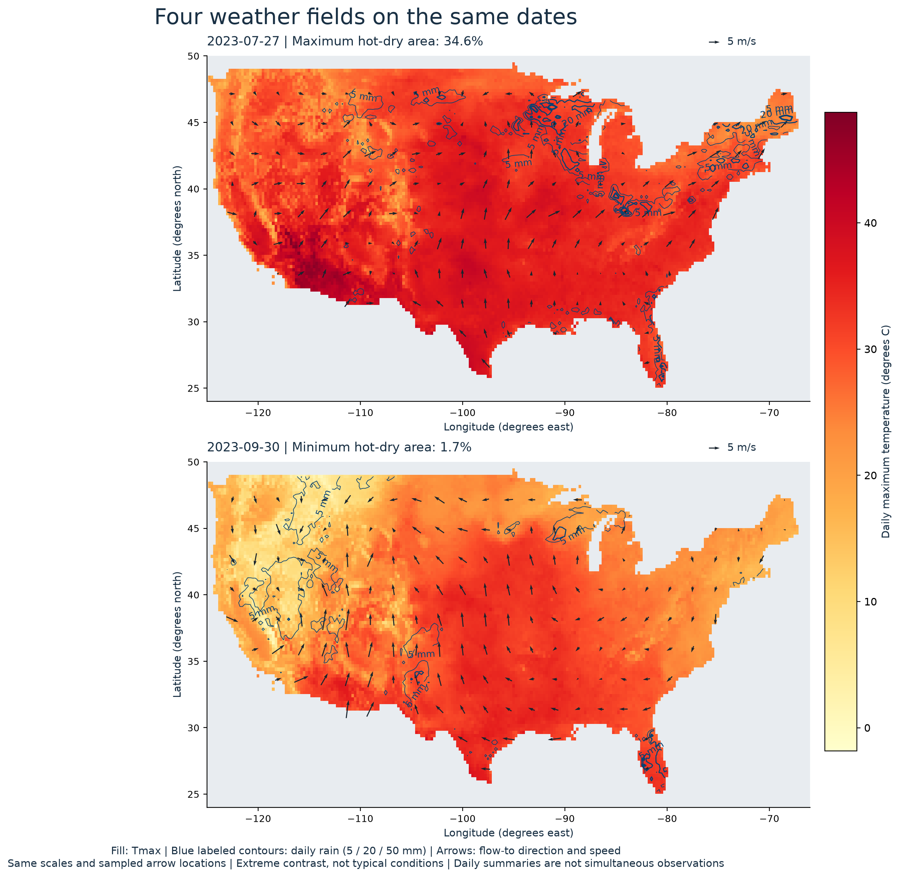
How to read
Both maps combine temperature color, rain contours and wind arrows. They show July 27 and September 30 on shared scales so the fields can be read at the same locations.
Why this chart
Separate temperature, rainfall and wind maps make it hard to check whether conditions occur at the same locations. The overlay aligns the three fields on one map. Two contrasting dates show what that alignment adds, while common visual scales keep the comparison meaningful.
Interpretation
These dates contrast high and low hot-dry coverage: 34.56% and 1.75% of the study area. Combining the fields shows where warm areas, rainfall boundaries and wind directions lie together. Separate area averages would not identify those locations.
The rainfall contours keep threshold boundaries visible without replacing the temperature background, and the arrows add wind direction at sampled locations. The result is useful for checking where the fields meet, but the single map can become busy if every grid arrow is drawn. The spacing chosen in the quiver experiment is therefore carried into the overlay. Complete-period counts are still needed to say how common the selected contrast is.
Takeaway
The combined maps preserve where temperature, rain and wind occur together, which separate area averages lose. The selected dates contrast hot-dry coverage of 34.56% and 1.75%. They illustrate a spatial difference; the complete-period frequency calculation is still needed to judge how common the shared conditions are.
Figure 29. Separate frequencies and shared occurrence.
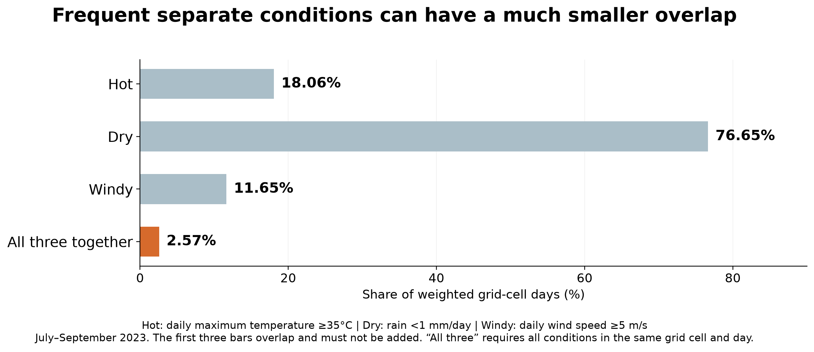
How to read
The first three bars count hot, dry and windy grid-cell days separately. The orange bar requires all three conditions in the same grid cell on the same day. All bars use the same weighted percentage scale.
Why this chart
With three conditions and a question about their joint occurrence, four bars give a direct answer. The first three establish how common each condition is; the fourth requires all three together. An intersection matrix would add symbols and combinations that are unnecessary for this comparison.
Interpretation
Dry conditions are common, but all three conditions occur together in only 2.57% of weighted grid-cell days. The shared frequency cannot be read from any single condition’s bar. Checking the conditions together adds information that their separate frequencies leave out.
The separate frequencies are about 18.06% hot, 76.65% dry and 11.65% windy. They overlap, so they must not be added to obtain a total. The 2.57% joint bar is calculated by checking the three conditions in each cell on each day before averaging. This preserves coincidence that would be lost by multiplying or comparing separate spatial averages.
Takeaway
Dry conditions occur on about 76.65% of weighted grid-cell days, yet the hot-dry-windy combination occurs on only 2.57%. A common individual condition does not imply common joint occurrence. The overlap must be checked at the same cell and date, and the first three overlapping bars must not be added.
Figure 30. How often conditions occur and how long they last.
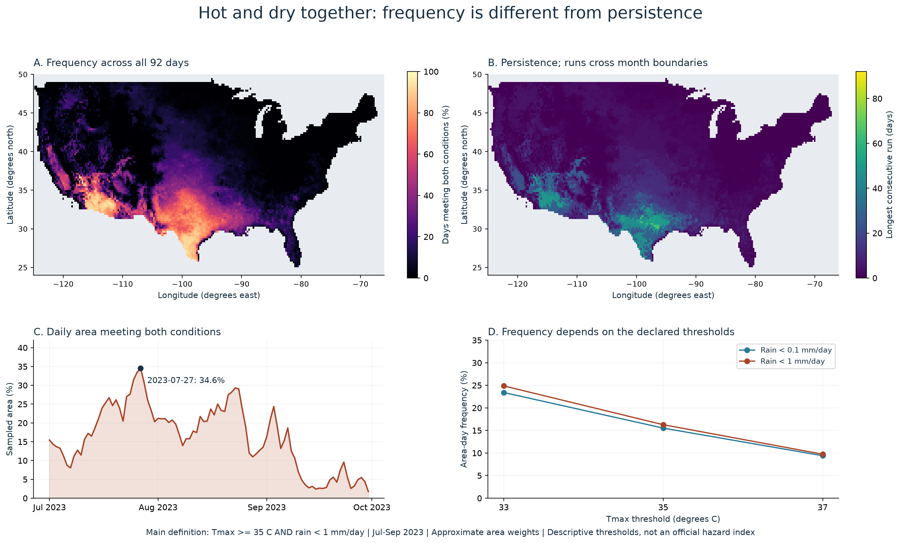
How to read
The maps compare hot-dry day frequency and the longest hot-dry run at each cell. The daily curve shows area coverage. The final panel repeats the calculation under alternative thresholds.
Why this chart
The shared-condition bars count occurrences but do not show whether they form long uninterrupted spells. Frequency and longest-run maps separate these two ideas. The daily coverage curve restores timing, and the threshold panel checks how the numerical result changes when the event definition changes.
Interpretation
Hot-dry conditions cover 16.27% of weighted grid-cell days, but the longest local run reaches 67 consecutive days. The frequency and run-length maps therefore answer different questions. The threshold comparison shows that the chosen definition also changes the measured amount of overlap.
The longest run is calculated separately in each cell, whereas the daily curve shows how much of the full study area is affected at once. A long local spell and a large affected area are different findings. The plotted sensitivity check uses 33, 35 and 37 degrees with rain cutoffs of 0.1 and 1 mm/day. Runs touching July 1 or September 30 may continue outside the observed window.
Takeaway
Hot-dry conditions account for 16.27% of weighted grid-cell days, while one location has a 67-day uninterrupted run. Frequency, local duration and affected area therefore answer different questions. Reporting them together, with the threshold comparison, shows more than a single event count and makes the chosen definition visible.
Figure 31. Similar adoption can hide different infrastructure.
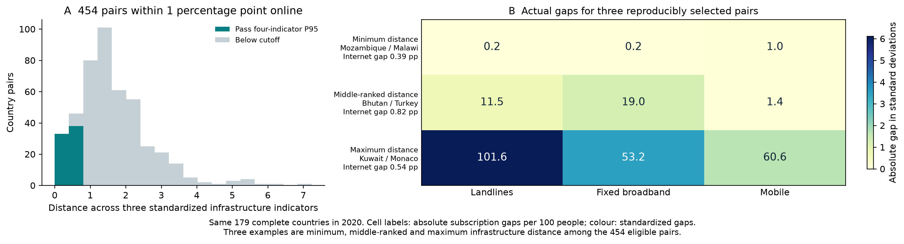
How to read
Panel A counts pairs within one percentage point in internet use. Panel B shows three pairs selected by minimum, middle-ranked and maximum infrastructure distance. Labels give absolute subscription gaps per 100 people; colour gives standardized gaps.
Why this chart
This links an almost equal headline rate to the infrastructure detail it conceals. The histogram retains all eligible pairs, while the examples make the gaps tangible.
Interpretation
The 179 complete profiles yield 454 pairs whose internet-use rates differ by at most one percentage point. Only 71 meet the original P95 similarity cutoff; 383 do not. Bhutan and Turkey differ by 0.82 points in internet use but 19.0 broadband subscriptions per 100 people. The horizontal axis uses only landline, broadband and mobile differences, scaled by the same 179-country standard deviations. The examples span the observed range; subscription counts may exceed 100 per 100 people. This descriptive comparison establishes neither significance nor infrastructure causes.
Takeaway
Of 454 pairs with almost equal internet-use rates, only 71 meet the four-indicator network cutoff. Similar adoption therefore need not mean similar infrastructure.
Figure 32. Daily event order separates frequency from persistence.
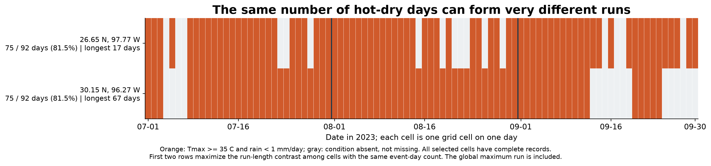
How to read
Rows are named grid cells; columns are all 92 days. Orange marks hot-dry conditions and gray their absence. Row labels give event-day counts and longest runs; vertical lines separate months.
Why this chart
Maps show where frequency and persistence occur. The calendar reveals the daily ordering that creates their difference.
Interpretation
The first two cells each meet the condition on 75 of 92 days (81.5%), but those days form longest runs of 17 and 67 days. Their different orange sequences make the lost ordering visible. The final row locates the full-footprint maximum of 67 consecutive days in time. Selection searches all 13,416 complete cells, using an explicit tie rule recorded with the data. This supports the main question: even an exact event count hides whether conditions are scattered or sustained.
Takeaway
Two cells each have 75 hot-dry days, yet their longest runs are 17 and 67 days. Frequency alone cannot recover duration.
Supplementary analyses
These are additional analyses and older versions; the numbered figures above match the current report.
Historical five-neighbor version (superseded by the all-pair threshold network): Region-ordered adjacency matrix.
Pairwise relationships across four telecom measures.
Worked horizon construction.
KDE sensitivity with empirical reference.
Adoption-band transitions.
Historical five-neighbor version (superseded by the all-pair threshold network): NodeTrix overview.
Historical five-neighbor version (superseded by the all-pair threshold network): Group profiles.
Adoption quantiles and matched-country gains.
Absolute and relative inequality through time.
Weather condition intersections.
Matched-country changes reveal divergent infrastructure paths.
Country-by-year adoption atlas.
Asia treemap drilldown.